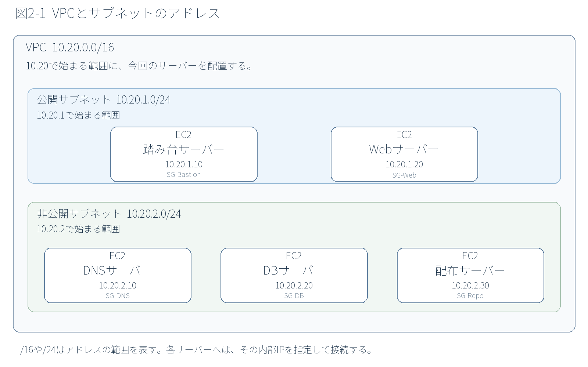
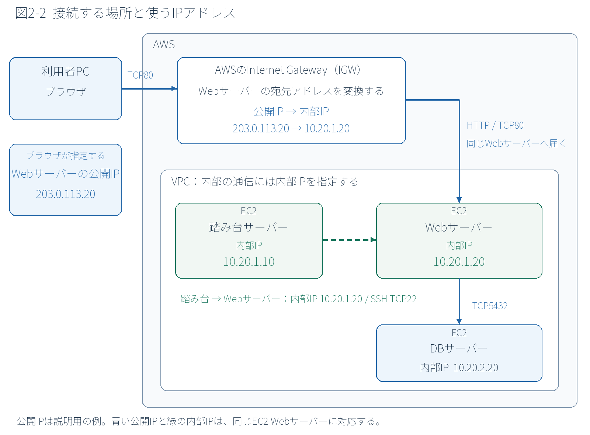
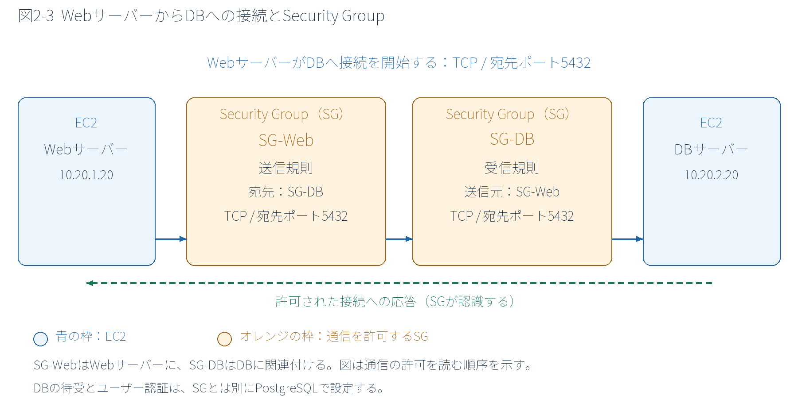
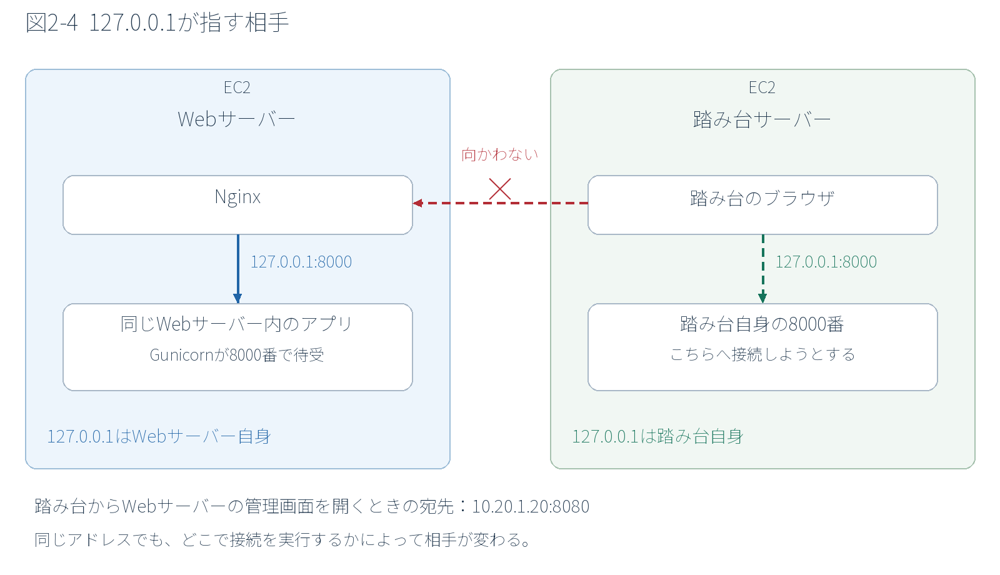

第2章 AWS上のネットワークと通信経路
この章で分かること
第1章では、学校の備品管理システムを支える5台のサーバーを紹介した。本章では、そのサーバー同士がどのように接続するかを考える。例えば、利用者PCは公開Webサーバーへ接続し、Webサーバー上のアプリは内部のDBへ接続する。同じWebサーバーでも、一般の閲覧と管理画面では使う入口が異なる。
接続を理解するには、「どのサーバーへ」「どの機能を使うために」「どこから接続するか」を分けるとよい。接続先を指定するIPアドレス、機能の入口を指定するポート、相手を制限するSecurity Groupを、今回の構成に当てはめて説明する。
・ 内部IPと公開IPは、どの場面で使うのか。
・ VPCとサブネットのアドレス表記は、どう読むのか。
・ IPアドレスが同じでも、接続するポートが違うと何が変わるのか。
・ Security Groupでは、何を条件に通信を許可するのか。
・ 127.0.0.1は、どのコンピューターを指すのか。
2.1 IPアドレスで通信する相手を指定する
今回の備品管理アプリにおいて、利用者が備品の一覧を開くときは、利用者PCのブラウザがWebサーバーへページを要求する。その要求を受けたWebサーバー上の備品管理アプリが、DBサーバーへ備品データの読み取りを要求する。また、管理画面から備品を登録・変更するときも、Webサーバー上のアプリがDBサーバーへデータの書き込みを要求する。このように、ブラウザとアプリは、それぞれの処理に応じた相手と通信する。
IPアドレスは、ネットワーク上の通信先を指定するアドレスである。厳密にはホストのネットワーク接続口に付くが、本章ではサーバーを指定するためのアドレスとして読んでいく。今回の構成では、例えばWebサーバーの内部IPが10.20.1.20、DBの内部IPが10.20.2.20である。
このように、数字をドットで四つに区切った表記はIPv4という形式である。各部分には0〜255の値を使う。今回扱う接続先はIPv4で表す。
通信を始める側が送信元、その通信が向かう相手が宛先である。WebサーバーからDBへ接続する場面なら、送信元はWebサーバー、宛先はDBになる。DBから結果が返るときは、データが流れる方向が逆になる。
アドレスを見るときは、どこで動くプログラムが、どの相手に接続するのかを一緒に読む。例えば、ブラウザがWebサーバーへ接続することと、Webサーバー上のアプリがDBへ接続することは、別の通信である。
2.2 VPCとサブネットのアドレスを読む
VPC（Virtual Private Cloud）はAWSの中に用意するネットワークであり、サブネットはその中をIPアドレスの範囲で分けたものである。今回のVPCは10.20.0.0/16、公開サブネットは10.20.1.0/24、非公開サブネットは10.20.2.0/24を使う。
スラッシュを付けたこの書き方をCIDR（Classless Inter-Domain Routing）表記という。10.20.1.20は一つのアドレスだが、10.20.1.0/24はアドレスの範囲を表す。
IPv4の/24では、先頭の三つの数値が同じ範囲を表す。今回なら10.20.1で始まる範囲と、10.20.2で始まる範囲を別のサブネットとして使う。/16は先頭の二つの数値が同じ、より広い範囲であり、今回の二つのサブネットはどちらもVPCの10.20で始まる範囲に含まれる。

図2-1 VPC、サブネット、内部IPの対応。 大きなVPCのアドレス範囲の中を二つに分け、役割ごとにサーバーを配置する。公開側のサーバーも、VPC内で使う内部IPを持つ。
| サーバー | 内部IPv4アドレス | 配置するサブネット |
|---|---|---|
| 踏み台 | 10.20.1.10 | 公開 10.20.1.0/24 |
| Webサーバー | 10.20.1.20 | 公開 10.20.1.0/24 |
| DNS | 10.20.2.10 | 非公開 10.20.2.0/24 |
| DB | 10.20.2.20 | 非公開 10.20.2.0/24 |
| 配布 | 10.20.2.30 | 非公開 10.20.2.0/24 |
この表では、アドレスの範囲と実際に使うアドレスを分けて読む。例えばWebサーバーの接続先は10.20.1.20であり、サブネット名の10.20.1.0/24へ接続するわけではない。AWSのIPアドレスとCIDR
2.3 インターネットからの接続とVPC内の接続
内部IPを使う場面
内部IP（プライベートIP）は、今回のVPC内のサーバー同士で使うアドレスである。踏み台からWebサーバーへSSH接続するときや、WebサーバーからDBへ接続するときは、相手の内部IPを使う。
内部IPは、インターネット上の端末からそのまま接続できる公開の宛先ではない。例えば、携帯電話回線につないだPCから10.20.2.20を指定しても、今回のDBへ直接接続することはできない。
公開IPを使う場面
公開IP（パブリックIP）は、インターネット側から接続するために使うアドレスである。今回は公開サブネットのWebサーバーと踏み台に公開IPを割り当てる。利用者PCから一般画面を見るときはWebサーバーの公開IP、RDPで管理用デスクトップを開くときは踏み台の公開IPを使う。
Webサーバーは公開IPだけでなく、内部IP10.20.1.20も持つ。同じWebサーバーに対して、利用者PCは公開側から接続し、踏み台はVPC内の内部IPへ接続する。使うアドレスが異なっても、今回の構成では同じEC2 Webサーバーへの接続である。

図2-2 同じWebサーバーの公開IPと内部IP。 青色はインターネット側から指定するWebサーバーの公開IP、緑色はVPC内で指定するWebサーバーの内部IPを表す。AWSのInternet Gatewayで宛先が公開IPから内部IPへ変換され、同じWebサーバーへ届く。203.0.113.20は説明用の例であり、実際には対象環境で割り当てられた公開IPを使う。文書用IPアドレスの規定
公開範囲とInternet Gateway
ゲートウェイは、異なるネットワークをつなぐ出入口を表す一般的な用語である。本書でInternet Gateway（IGW）と呼ぶものは、AWSがVPCとインターネットの接続のために提供する機能を指す。図2-2のIGWもAWS側にあり、利用者PCからWebサーバーへ向かう通信はここを経由する。
今回のIPv4通信では、AWSのIGWがWebサーバーの公開IPと内部IPの対応を処理する。利用者PCが公開IP宛てに送った通信は、IGWで宛先をWebサーバーの内部IPへ変換してからVPC内へ届けられる。返答では、インターネット側へ送るときに送信元がWebサーバーの公開IPへ変換される。これが、公開IPと内部IPのどちらを使っても同じWebサーバーへ届く仕組みである。AWS Internet Gatewayのアドレス変換
非公開サブネットのDNS、DB、配布サーバーには公開IPを割り当てない。インターネットから直接接続する入口は用意せず、VPC内の必要なサーバーから利用する。例えば、公開サブネットのWebサーバーから非公開サブネットのDBへ接続し、非公開サブネットのDNSから配布サーバーへ必要な資源を取得する。
公開・非公開は、インターネットとの接続の扱いである。VPC内の接続をどこまで許可するかは、後述するSGの条件で決める。公開IPを持つWebサーバーでも、公開するのは一般閲覧などに必要な入口である。AWSの公開・非公開サブネット、Internet Gateway
2.4 プロトコルとポートで使う機能を指定する
同じサーバーの中にも複数の入口がある
IPアドレスでWebサーバーを選んだ後、その中のどの機能へ接続するかを指定する。一般の一覧を開く、管理画面を開く、端末から設定する、という目的ごとに使う入口が異なる。その入口を区別する番号がポート番号である。
通信の約束や方式をプロトコルという。今回のHTTP、SSH、RDP、DB接続では、データを順序どおり届けるTCPという通信方式を使う。DNSの問い合わせではUDPとTCPの両方を使う。TCPとUDPの同じ番号は、別の通信窓口として扱う。
例えば、Webサーバーの10.20.1.20へTCPの80番で接続すると一般のWeb入口を使う。踏み台から同じIPへTCPの22番で接続すると、SSHによる端末操作の入口を使う。接続先のサーバーは同じでも、使う機能が違う。
| 用途 | 通信方式 | 宛先ポート |
|---|---|---|
| 一般WebサーバーのHTTP | TCP | 80 |
| 踏み台のRDP | TCP | 3389 |
| サーバー管理のSSH | TCP | 22 |
| 内部DNSへの問い合わせ | UDPとTCP | 53 |
| PostgreSQLへの接続 | TCP | 5432 |
| Webサーバーの内部向け管理画面 | TCP | 8080 |
| Webサーバー内のアプリへの要求転送 | TCP | 8000 |
ポート番号には、HTTPの80番やSSHの22番のように、標準や業界の慣習で用途が定まっているものがある。一方、実際にどのポートで接続を受け付けるかは、ソフトウェアの設定で指定できる。今回は一般向けのWebページを80番、内部向けの管理画面を8080番で受け付けるように設定する。管理画面だから自動的に8080番になるのではなく、構築する側がその番号を選んでいる。IANAのサービス名とポート番号
ソフトウェアの待受
サーバーが、指定したアドレスとポートで接続を受け付ける準備をすることを待受という。NginxがWebサーバーの80番で待ち受けていれば、その入口へHTTPの要求を送れる。
待受には、ポートだけでなくアドレスも関わる。例えば、同じホスト内だけで使う127.0.0.1:8000と、VPC内から使う10.20.1.20:8080は、別の相手から利用する入口である。127.0.0.1の意味は2.7で詳しく説明する。
待受の表示で使う0.0.0.0:80は、そのホストのすべてのIPv4ローカルアドレスで80番を受け付ける指定である。VPC内やインターネットから実際に接続できるかどうかは、通信経路とSGの許可も必要になる。LinuxのIPアドレスとソケット
2.5 Security Groupで通信する相手を制限する
入ってくる通信と出ていく通信
Security Group（SG）は、関連付けたサーバーなどのAWS資源について、許可する通信を定める仕組みである。今回は5台の役割に対応したSGを使う。
サーバーへ入ってくる通信の条件をインバウンドルール（受信規則）、サーバーから出ていく通信の条件をアウトバウンドルール（送信規則）という。送信元から出る側と、宛先へ入る側の条件を組み合わせて考える。
例えばWebサーバーからDBへ接続する場合、Webサーバーの送信側でDBへのTCP5432を許可し、DBの受信側でWebサーバーからのTCP5432を許可する。そのうえでDBが接続を受け付け、認証を行う。

図2-3 WebサーバーからDBへの接続とSG。 オレンジ色の枠がSG、青色の枠がEC2である。Webサーバーに関連付けたSG-Webの送信規則と、DBに関連付けたSG-DBの受信規則で通信を許可する。SGはAWS側で通信を制御する仕組みであり、図ではEC2と分けて示している。青い矢印は接続を始める方向、緑の矢印はその接続への応答を表す。
許可条件を読む
受信規則では、主に「送信元」「プロトコル」「宛先ポート」を読む。次は今回のサービスに必要な受信規則の例である。
| 対象のSG | 送信元 | 許可する通信 |
|---|---|---|
| WebサーバーのSG | インターネット側のIPv4 | TCP80：一般Webサーバー |
| 踏み台のSG | 許可された接続元IPの範囲 | TCP3389：RDP |
| 各内部管理先のSG | 踏み台のSG | TCP22：SSH |
| DNSのSG | 踏み台のSG、WebサーバーのSG | UDP53・TCP53：名前解決 |
| DBのSG | WebサーバーのSG | TCP5432：DB接続 |
| WebサーバーのSG | 踏み台のSG | TCP8080：管理画面 |
| 配布サーバーのSG | 必要な内部サーバーのSG | TCP80：資源の取得 |
送信元としてSGを指定する場合は、そのSGを関連付けたサーバーからの通信を許可する。例えばDBの受信規則でWebサーバーのSGを指定すると、今回そのSGを持つWebサーバーからの接続を許す。WebサーバーのSGに書かれた規則をDBへコピーする、という意味ではない。
IPの範囲を使う規則もある。/32はIPv4の一つのアドレス、0.0.0.0/0はすべてのIPv4アドレスの範囲を表す。今回の一般WebサーバーのTCP80は後者を使い、管理用のRDPは許可された接続元に絞る。
許可されていない通信と応答
SGでは、必要な通信の許可を追加する。今回のDBでWebサーバーからのTCP5432を許可しても、踏み台からのTCP5432やWebサーバーからの別のポートまで許可したことにはならない。VPC内にいるという条件だけで、すべての機能を使えるわけではない。
SGは、許可した通信に対する応答を認識する。Webサーバーから始めたDB接続への返答について、同じ応答のために逆方向の規則を追加する必要はない。この性質をステートフルという。これは、DBからWebサーバーへ新しい別の接続を始めることまで許可するという意味ではない。AWSのSGルール、応答通信の扱い
2.6 利用と管理で異なる通信経路
一般のWeb閲覧
Webアプリ上で備品一覧を見るときは、利用者PCのブラウザがWebサーバーの公開IPへHTTPで接続する。要求はAWSのIGWを経由してWebサーバーの一般入口へ届く。Webサーバー上のアプリがDBの値を必要とするときは、Webサーバーが内部DNSでDB名を解決し、DBの内部IPへTCP5432で接続する。
このとき、ブラウザとWebサーバーの接続、WebサーバーからDNSへの問い合わせ、WebサーバーからDBへの接続は、それぞれ別の通信である。必要な通信ごとに送信元、宛先、プロトコル、宛先ポートを読む必要がある。
サーバーのOSやサービスを管理する
Nginxの設定を変える、サービスを再起動する、ログを調べるといった操作は、サーバーのOS上で行う。踏み台を使う場合は、まずRDPで利用者PCから管理用の踏み台へ接続してデスクトップを開く。次に踏み台の端末からSSHでWebサーバーやDBなどの対象サーバーへ接続し、コマンドで操作する。WebサーバーやDBのSSHを、インターネットから直接接続する入口として公開しない構成である。
演習には、CloudShellからSSMで対象のEC2へ接続してOSを操作する方法もある。ここでは踏み台を使う経路を説明しているが、OSの管理手段はRDPとSSHだけに限らない。各接続方法の操作は第3章で扱う。
Webアプリの管理画面を使う
Webアプリには、一般の利用者が情報を見る入口と、管理者が内容を登録・変更する入口を分けて用意することがある。今回の備品管理アプリも、一般画面では公開された備品の一覧を閲覧し、管理画面ではログインした管理者が備品の追加や、数量・保管場所などの変更を行う。
管理画面を使う場合も、まずRDPで踏み台のデスクトップを開く。その後はSSHではなく、踏み台上のブラウザからhttp://admin.lab.test:8080/admin/を開く。内部DNSがこの名前をWebサーバーの内部IP10.20.1.20へ解決し、ブラウザがWebサーバーの8080番へHTTPで接続する。RDPは踏み台を操作するための接続であり、アプリの管理者としてのログインは、その先のWeb画面で行う。
今回の構成では、一般向けの80番からは管理画面を開けない。管理用の8080番は踏み台からの接続だけを許可する。このように、同じ踏み台を利用しても、OSの設定変更はSSH、アプリ内の備品の登録・変更はブラウザと、目的によって使うソフトウェアと接続先が異なる。
送信元と宛先を一組で読む
例えば「DBのポートは5432」という情報だけでは、接続の全体は分からない。「Webサーバーから、DBの内部IPへ、TCP5432で接続する」と読めば、使う側と受け付ける側が明確になる。
同じ考え方で、「踏み台からDNSへUDP53・TCP53」「DNSから配布サーバーへTCP80」「踏み台からWebサーバーへTCP8080」と整理する。通信表はポート番号の暗記表ではなく、必要な相手と機能を示す表として使う。
2.7 127.0.0.1はそのホスト自身を表す
Webサーバー上のNginxは、同じWebサーバー内で動くアプリへ要求を渡す。この接続に使う127.0.0.1は、プログラムが動いているホスト自身を指すループバックアドレスである。
Webサーバー上のNginxが127.0.0.1:8000へ接続すれば、Webサーバー自身の8000番へ向かう。今回のGunicornはその入口で待ち受けるため、同じWebサーバー内のNginxからアプリへ要求を渡せる。
一方、踏み台のブラウザで127.0.0.1:8000を指定すると、踏み台自身の8000番へ向かう。同じ数字を書いても、Webサーバー内のアプリを指すことにはならない。踏み台から管理画面を開く場合は、Webサーバーの内部IPと8080番を使う。

図2-4 ループバックが指す相手。 127.0.0.1は接続を実行するホスト自身を指す。赤い×印を付けた矢印は、踏み台でこのアドレスを指定してもWebサーバーへ向かわないことを示す。
2.8 接続に必要な条件を結び付ける
Webサービスを利用するためには、通信先のIPとポートを選び、そこまでの通信を許可し、目的のソフトウェアが待ち受けている必要がある。その後、受け取った要求をソフトウェアが処理して、ページやデータを返す。
例えばSGでTCP80を許可しても、Nginxが停止していれば目的のWebサービスは使えない。また、Nginxが同じホスト内だけで待ち受けている場合は、外部向けの入口としては使えない。通信の許可と、サービスが応答することは、それぞれ設定する対象が違う。
DBでも同様に、SGでTCP5432を許可することと、PostgreSQLで接続するroleやパスワードを認証することは別の役割である。ネットワーク上で接続先まで届く条件と、ソフトウェアを利用するための条件を順に整える。
本章で説明したアドレス、ポート、SGの条件は、以後のWebサーバー、DNS、DB、アプリの設定を理解するための共通の土台となる。次の第3章では、実際に各サーバーへ接続するときの操作と、今どのホスト・ユーザーで作業しているかの見分け方を扱う。
章末問題
問1
IPアドレスとポート番号は、それぞれ何を指定するものか。
問2
公開IPを持つEC2 Webサーバーは、内部IPも持つか。利用者PCからの一般閲覧と、踏み台からの接続では、それぞれどのIPを使うか。
問3
DBのSGで、WebサーバーからのTCP5432だけをDB利用のために許可した。この規則により、同じVPC内の踏み台からもTCP5432でDBを利用できるか。
問4
踏み台のブラウザで127.0.0.1:8000を指定した場合、どのコンピューターの8000番へ接続しようとするか。
章末解答
問1
IPアドレスは通信するホスト側の宛先を指定し、ポート番号はそのホスト内の通信窓口を指定する。今回の例では、10.20.1.20でWebサーバーを選び、TCP80で一般Webサーバー、TCP22でSSHの入口を選ぶ。
問2
内部IPも持つ。利用者PCからの一般閲覧はWebサーバーの公開IPへ接続する。踏み台から同じWebサーバーへ接続する場合は、内部IPの10.20.1.20を使う。
問3
この規則では許可されない。送信元をWebサーバーに限定しているため、同じVPC内にある踏み台からのDB利用も別に扱う。今回の構成では、DB利用の接続元をWebサーバーに絞る。
問4
踏み台自身の8000番である。Webサーバー内のアプリを指すアドレスにはならない。今回、踏み台からWebサーバーの管理画面へ接続する際は、Webサーバーの内部IPと8080番を使う。
参考資料
確認日：2026-10-30。アドレス、ポート、通信許可の例は、今回の構成と現行教材の設定による。
・ AWS IP addressing for your VPCs and subnets
・ IANA Service Name and Transport Protocol Port Number Registry
・ 今回の5台構成
・ 第1章